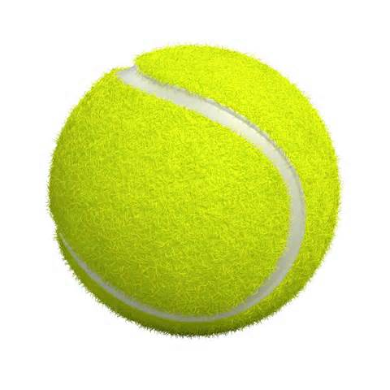

Back to Homepage or Data Minecraft
DescriptionIn Tennis, it’s certainly true that a skilled player could win more points by moving forward. But when pros don’t emphasize that part of their game and they gain little match experience approaching the net, do they have the skills necessary to take advantage of such an opportunity?
To better show if approaching the net is a winning strategy in practice, this visualization utilized the data of top 30 dominent men players in US Open in ten years (from 2003 to 2013) to make an interactive and comparable Treemap. The size of a rectangle represents the winning/nets data of corresponding player. By checking label "Winnings" or "Nets", you are able to compare if approaching net will bring points. Mouse over a player's rectangle will show data tag.
The result shows that net approach, although theorectically considered a winning strategy, is not particularly powerful in practice. None of Roger Federer, Rafael Nadal and Andy Roddick, the top players in the "winnings" treemap, showed more than average net approach.